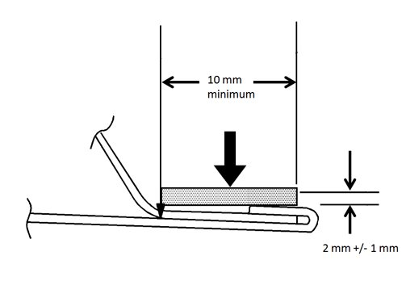

Body - Hem Flange Sealer For Corrosion Protection
INFORMATIONBulletin No.: 06-08-51-005B
Date: April 30, 2012
Subject: Information on Hem Flange Sealer for Corrosion Protection
Models:
2013 and Prior GM Passenger Cars and Trucks
Attention:
Please direct this bulletin to the Body Shop or any areas of your dealership where sheet metal replacement or corrosion repairs take place.
Supercede:
This bulletin is being revised to add model years. Please discard Corporate Bulletin Number 06-08-51-005A (Section 08 - Body and Accessories).
Replacement Sheet Metal
Metal or aluminum overlap joints and seams, commonly referred to as hem flanges, on replacement doors, hoods, decklids and liftgates should be sealed to prevent moisture from entering the bonded hem flange using a quality 2K sealer such as the following products, or equivalent:
- Lord Fusor 123EZ / 126EZ Non-Sag seam sealer
- 3M 8308 Ultrapro sealer
- Crest CT-NT Thick-n-Tan
- Crest CB-M1 Black Majik
- Kent E-6000 Non-Sag seal sealer
The applied sealer must meet the following criteria:
- The sealer must be free of skips using a ribbon tip to locate the bead over the edge of the hem. Refer to the following illustration.

- The sealer must cover all edges with a bead width of approximately 10 mm (0.39 in) and approximately 2 mm (0.08 in) thick.
- The sealer must be paintable.
- The sealer must retain its flexible characteristics after curing.
- The sealer must not block a water drain path.
Always use Genuine GM replacement sheet metal.

Disclaimer